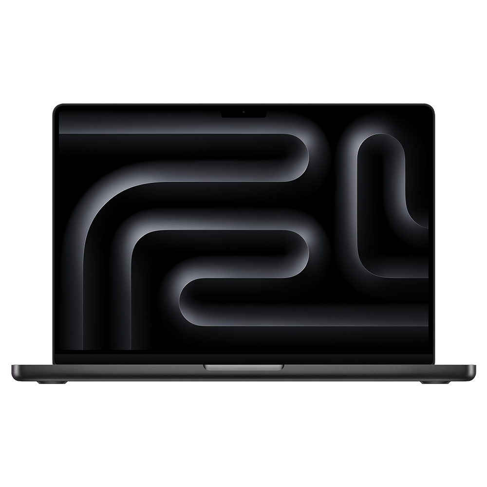

Technology that
fits your life.
Elite Tech Outlet is an independent retail concept built around a simple idea: choosing your next device should feel clear and personal.
Less guesswork.
More clarity.
Our collection centers on Apple devices: iPhone 15 and newer, MacBooks, iPads, and Apple Watch. Every model listing connects you to its official specifications.
Before purchasing any device, confirm the exact storage, cosmetic condition, battery condition, carrier compatibility, included accessories, and return terms.
Tell us what you need
Built for your workflow. Explore the MacBook collection.
Start with what matters to you.
Your daily connection.
Consider camera needs, screen size, storage, and carrier compatibility.
Your mobile workspace.
Compare portability, display size, memory, and the software your work requires.
Your flexible canvas.
Think about reading, note-taking, creative apps, and keyboard or Pencil compatibility.
Your wrist companion.
Check case size, iPhone compatibility, and GPS versus cellular connectivity.
Let’s find your fit.
Explore the collection or start with a question.